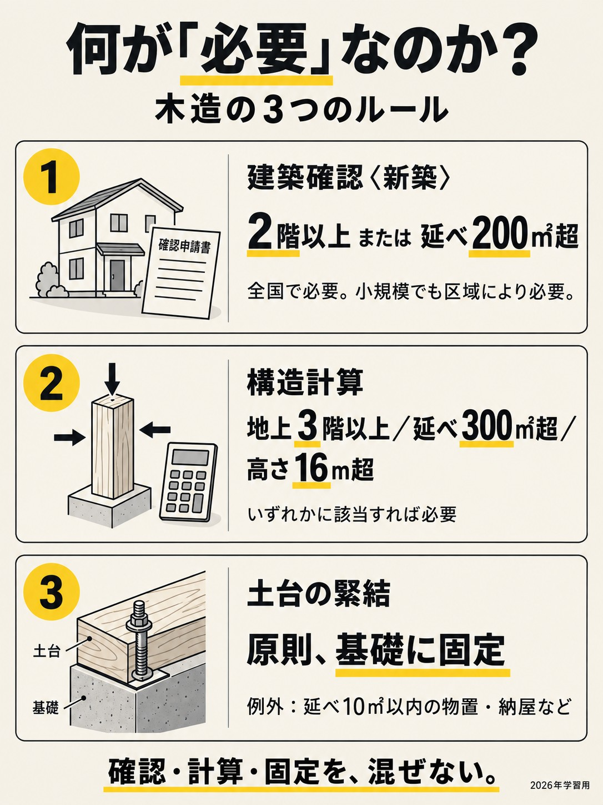

詳しく見る・確認問題
混同：「２割まで保全」と考えてしまう。
手付の受取り → ２割まで
必要な保全 → 対象額の全額
必要な保全 → 対象額の全額
売主が宅建業者・買主が非業者なら、売主が受け取れる手付金は代金の20％まで。保全が必要なら、対象の手付金等を全額保全する。中間金を含む保全額に20％の上限があるわけではない。
一問確認：完成物件２億円。手付1,800万円、登記前。保全するのは4,000万円？
×。1,800万円全額。4,000万円は手付として受け取れる上限。
神問題集 2026
神問題集 2026
数字を入力 → 確定 → 自動で次へ
連続正解数だけ、この端末に保存
報酬は上限額。売買の「3%＋6万円」は消費税抜代金400万円超。課税宅建業者は×1.1、免税宅建業者は×1.04。土地売買が非課税でも、課税業者の報酬は×1.1。権利金は非居住用・返還なし・消費税抜200万円以下で5%。居住用0.5か月は○×で確認。
容積率は道路係数の別指定・特別な緩和を除く。角地は特定行政庁の指定あり。建蔽率80%＋防火地域の耐火建築物は建蔽率制限の適用除外（計算では100%）。
間違えた型は別の数字ですぐ再出題。苦手型の重みは今回開いている間だけ保持。
混同：「２割まで保全」と考えてしまう。
売主が宅建業者・買主が非業者なら、売主が受け取れる手付金は代金の20％まで。保全が必要なら、対象の手付金等を全額保全する。中間金を含む保全額に20％の上限があるわけではない。
×。1,800万円全額。4,000万円は手付として受け取れる上限。

混同：「10％以上」「新築なら10％」と覚えてしまう。
未完成は５％、完成は10％。割合または1,000万円のどちらかを超えるなら保全が必要。手付金と中間金等（契約後・引渡し前に支払う代金充当金）を合計し、基準を超える受領の前に、受領済み分も含めて保全する。買主の登記による例外は次の項目。
×。10％以下、かつ1,000万円以下なので不要。完成２億円で手付1,500万円なら、1,000万円を超えるので全額保全。

混同：「登記と全額払いの両方」が保全不要の条件だと思う。
買主への所有権移転登記、または買主の所有権保存登記があれば、手付金等の保全は不要。全額払いは条件ではない。クーリングオフは、引渡しと代金全額払いの両方が済むとできなくなる（場所・告知後８日など、他の条件も別にある）。
○。保全の登記による例外に、全額払いは要求されない。

混同：仲介業者が入ると、売主の保全義務がなくなると思う。
取引当事者である売主が宅建業者、買主が非業者かを確認する。別の仲介業者がいても対象。売主が非業者なら、この法定保全義務はない。
×。売主の立場で判断する。金額・登記等の条件は続けて確認。

混同：手付と違約金を足す／それぞれ２割にする。
業者が自ら売主・買主が非業者の場合、債務不履行による契約解除についての損害賠償予定額と違約金は、合計で代金の20％まで。何でも自動的に２割請求できる制度ではなく、定めた条件で判断する。
×。合計25％になり、20％を超える部分は無効。

混同：契約後だから、契約書とは別に必ずもう一枚作ると思う。
35条は契約前の判断材料を説明する書面。37条は成立した契約内容を遅滞なく交付する書面。必要事項と宅建士の記名等を満たす契約書なら、37条書面を兼ねられる。37条書面自体の説明義務はない。
×。要件を満たせば兼用できる。単に「契約書」という題名だけでは足りない。

混同：設備は貸借だけだから、未完成の売買でも説明不要と思う。
未完成建物は売買・交換・貸借とも、完成時の主要構造部、内外装の構造・仕上げ、設備の設置・構造を35条で説明。完成済み建物の「台所・浴室・便所等の設備の整備状況」は貸借の説明項目。売買で別項目により同じ内容を一律説明する、という意味ではない。重大な故障を隠してよいという意味でもない。
×。仕上げや設備も対象。

混同：貸借ならすべて説明不要と思う。
35条の私道負担の説明は、土地の貸借では必要。建物の貸借ではこの項目の説明義務から除外される。売買・交換では対象。
×。「貸借」だけで判断せず、土地か建物かまで読む。

混同：37条の条件付き記載事項を全部同じ範囲だと思う。
天災その他不可抗力による損害の負担について定めたときは、売買・交換・貸借の37条書面に記載。租税公課の負担の定めは、売買・交換の記載事項。いずれも「定めがあるとき」の話で、契約違反に対する違約金とは別。
×。定めがあれば貸借でも記載する。

１問確認 課税業者が家賃10万円の居住用賃貸を媒介。依頼時に承諾を得れば、貸主・借主の双方から各11万円を受け取れる（特例なし）。
400万超：代金×3％＋6万、課税業者は×1.1。一方の上限
原則式の2倍。業者全体の合計も2人分が上限
双方合計1か月＋税。居住用一方0.5か月＋税、承諾例外
売買とみなす扱いは非居住用だけ。居住用不可
800万以下、一方30万＋税、調査費込み。売主買主双方
2026年9月23日公開。場所の判定、中間金を含む保全、契約不適合責任の特約をスライド11〜13へ反映。
法令照合：2026-09-23。講義の自動字幕を全編確認し、条件の省略や誤変換は条文で補正。

本店1000万、支店ごと500万。本店最寄り供託所。金銭・有価証券可
▶ 動画 25:25
試験合格→登録→宅建士証。合格だけで宅建士と呼ばない
▶ 動画 19:31
成年の専任宅建士5人に1人以上。不足2週間以内に補充
▶ 動画 30:18
指示→業務停止→免許取消し。取消しは免許権者のみ
▶ 動画 85:41
新講義 30:01 貸借の5項目 ／ 宅建業法37条1・2項。37条書面に記載する項目の比較であり、民法上の責任の有無とは別。

拘禁刑以上は執行終了等から5年。受けた時からでない
▶ 動画 14:24
軽い加工容易、横揺れ火弱い。柱梁鉛直、筋かい耐力壁水平。三角形強い
▶ 動画 45:24

強い粘り大空間、燃えないが熱で強度低下、耐火被覆必要
▶ 動画 46:24
切土天然締まり硬い、盛土締固めなければ柔らかい、境で不同沈下
▶ 動画 42:56
善意＝事情を知らない。無過失＝知らないことに落ち度がない。 メーターは、本人を守る強さを覚えるための比喩。
無効・取消しの要件を満たす場合の比較。心裡留保は無効となる場合。錯誤・詐欺・強迫・制限行為能力は、取消し前に権利を取得した第三者を想定する。人の性格や被害の大きさを採点するものではない。
民法93〜96条、5・9・13・17・120・121条 ／ 講師のメーターの説明
黄色のCは、上から2列・1列・ゼロ列。まず「AとBの契約を無効にできる・取り消せるか」、次に「AはCにも主張できるか」。
心裡留保は原則有効。Bが真意でないことを知り、又は知ることができた場合だけ無効。虚偽表示はA・Bが通じてしたもの。錯誤は重要性などの要件があり、Aに重過失がある場合は原則取消不可（Bが悪意・重過失、又は同一の錯誤なら例外）。基礎事情の錯誤では、その事情が法律行為の基礎とされていることの表示が必要。
第三者にだまされたときの取消しは、相手Bが詐欺を知り、又は知ることができた場合に限る。制限行為能力者の全ての契約を取り消せるわけではなく、同意の要否・日常生活の行為・詐術などはスライド35で確認。善意の転得者を挟む事例などは、このA→B→Cの単純な形と分けて考える。
民法93〜96条、5・9・13・17・21・120・121条 ／ 講師の勝敗表
Cが買ったのは取消しの前か、後か。 前なら 勝敗表へ。後ならAとCの登記を比べる。
取消し後にBから権利を取得した第三者との関係は、不動産の対抗問題として登記の先後で判断する（大判昭和17年9月30日・民集21巻911頁）。ここでの「登記」はAの回復登記とCの取得登記。単なる悪意と背信的悪意者を区別する。無効である心裡留保・虚偽表示を「取消し後」の図に入れない。解除・時効完成もそれぞれの成立場面から判断する。
民法177条 ／ 講師の取消し前・後の説明
「譲渡した年の1月1日」に戻って数える。5年ちょうどは短期。10年超の軽減税率も、所有期間の判定日は同じ。

固定資産税の元日は「誰が持っているか」。譲渡所得の元日は「何年持っていたか」。

200㎡以下部分1/6=小規模、超える部分1/3。300なら200と100に分ける
税額1/2、120㎡まで、原則3年、3階以上耐火5年。床40〜240㎡、旧280不可

自宅、所有期間条件なし。配偶者親子等身内へ売却不可
売った年1/1所有10年超。6000万以下部分の率軽減
非課税でなく後の売却時へ課税繰延
3000万控除＋軽減率可、買換えは併用不可

銀行貸す、機構債権買う、証券化支援。長期固定フラット35。証券化細部は覚えない
災害復興・予防等直接融資。民間難しい場面
死亡重度障害時保険金でローン弁済、機構業務

区域区分（線引き）は原則「できる」、三大都市圏等では必須。用途地域は13種（住居8・商業2・工業3）。線引きは区域単位で行い、線引きした都計区域の中は市街化＋調整で全部埋まる（「いずれにも属さない土地が残る」→×の定番ひっかけ）。線引きしない都計区域が、まるごと非線引き区域。

準都計だけ行き先が違う（開発許可では非線引きと同じ3,000／国土法では区域外と同じ1万）。迷ったら「開発許可のほうが数字が細かい」。国土法の事後届出は買主だけ・契約日から2週間以内。


「許可⇄届出」「農業委員会⇄知事」の入れ替えに注意（スライド30・31）。

代替機（仮換地）は使えるが売れない。売れるのは修理に出した自分の携帯（従前地）。

語呂は「盛1・切2・切盛2・盛2、そして500」。土石の堆積も対象（スライド33）。


対象の動画9本を全編確認して整理した473項目です。時刻から先生の説明へ戻れます。建築基準法は同じ一覧の中に35項目あります。
単体の4数字
住宅の居室の採光1/7以上、換気1/20以上、20m超は避雷設備、31m超は非常用昇降機。照明設備等による採光の緩和あり。
暗記・注意：4数字の外側は深追いせず、出たら捨ててよい。
▶ 42:242項道路・セットバック
昔から建物が並ぶ4m未満の道も特定行政庁の指定で道路とみなす。境界は中心線から2m。後退分は建築不可、建蔽率・容積率の敷地面積にも入れない。
暗記・注意：中心線から2m。現状の境界から一律2mではない。
▶ 43:32接道義務と許可
道路に2m以上接する。周囲に広い空地がある等で、特定行政庁が支障なしと認め、建築審査会の同意を得て許可する例外。
暗記・注意：1.5m接道で可／4m以上接道が必要、どちらも×。
▶ 44:15道路内・私道
道路内は原則建築不可だが地盤面下（地下街等）は可。私道の変更・廃止で他の敷地が接道義務違反になるなら、特定行政庁が禁止・制限できる。
暗記・注意：道路内は一切不可／自分の私道だから自由に廃止、は×。
▶ 44:58用途の線引き4つ
カラオケ＝第二種住居から先。ホテル・旅館＝第一種住居から（一住は3,000㎡以下）。映画館・劇場＝客席200㎡未満は準住居から、以上は近隣商業から。大学・病院＝低層系と工業・工専で×。
暗記・注意：大学・病院は講師画面47:26でも照合。4つの外側は深追い不要。
▶ 47:20建蔽率の3ボーナス
指定8/10＋防火地域＋耐火建築物等＝制限なし。防火の耐火／準防火の耐火・準耐火＝＋1/10、特定行政庁指定角地＝＋1/10。後2つは重複可。
暗記・注意：8割・防火・耐火。＋2/10の緩和と無制限は別。
▶ 48:21容積率の不算入
共同住宅・老人ホームの共用廊下・階段、EV昇降路は全部不算入。住宅・老人ホームの地下部分は住宅部分の床面積の1/3まで不算入。
暗記・注意：避難経路を削る動機を作らない。地下の天井1m以下という条件は説明なし。
▶ 50:06講師の計算例3つ
一住・敷地200㎡・建蔽6/10・指定容積400％・道路4m→建築120㎡、延べ320㎡。準防火の耐火＋指定角地→200×0.8＝160㎡。またぎ300㎡→200㎡×6/10＋100㎡×8/10＝200㎡。
暗記・注意：掛け算・足し算・小さい方の比較。
▶ 51:05建蔽率の追加適用除外
派出所・公衆便所、公園・広場・道路・川の中の建築物で特定行政庁が支障なしとして許可したものも建蔽率の制限を受けない。
暗記・注意：先生が話しているので捨てる対象にしない。
▶ 56:082025年4月の改正
先生は4号特例の廃止と説明。2階以上または延べ200㎡超は構造を問わず全国で確認。新築・増築・改築・移転・大規模修繕・模様替え。
暗記・注意：2階か200超えたら全国確認。木造3階・500㎡は旧ルール。
▶ 57:06特殊用途・用途変更
共同住宅・ホテル・病院等はその用途200㎡超で確認。200㎡超の特殊建築物への用途変更も必要。住宅→民泊ホテルを例示。ホテル→旅館など類似用途への変更は不要。
暗記・注意：用途変更を建物の大きさだけで一律×にしない。
▶ 58:04総復習・卒業試験
数字ラリーは道路4・接2・中心2、8割防火耐火、12m未満4/10・6/10、高さ10/12、防火3/100・準防火4/1500、確認2/200、完了4・受理7、ホテル3000、単体4数字を反復。卒業試験105:40〜106:45（旧106:07〜107:13）は正解2。
暗記・注意：小さい2階でも確認／8割防火耐火は9割でなく無制限／用途またぎは厳しい方でなく過半／低層の隣地斜線なし。
▶ 98:512026-10-04照合。住宅瑕疵担保履行法の基準日は先生の動画説明欄の訂正を優先。区分所有の普通決議は先生の要約に一律の定足数を足さず、誤記を補正しています。
通常の学習・出題は動画の範囲だけです。ここは学習を終えて余裕があるときの補足です。閲覧は成績に反映しません。
法定割合に算入する専任宅建士は未成年でもよい？
原則は成年者が必要。ただし宅建業者本人（法人なら役員）が宅建士として主にその事務所等で従事するときは、未成年でも成年者である専任宅建士とみなされる。
「青年者」「1000人の宅建士」は、成年者・専任の宅建士の誤変換。
帳簿は例外なく閉鎖後5年保存？
いいえ。宅建業者が自ら売主となる新築住宅に係る帳簿は閉鎖後10年間。
講義の「帳簿は5年」だけでは不完全。
REINS登録の5日・7日を数えるとき、締結日と宅建業者の休業日は入る？
入れない。締結日の翌日から、休業日を除いて数える。
単純な暦日5日・7日ではない。
REINSへ登録した後、登録済みを示す書面はどうする？
登録を証する書面を遅滞なく依頼者へ引き渡す。
登録するだけで手続完了ではない。承諾を得た電磁的方法による提供も可能。
2025年1月からREINSで追加された重要な義務は？
専任・専属専任媒介では、REINSに取引申込みの受付状況を登録し、最新かつ事実に合う状態に保つ義務。
「公開中」「書面による購入申込みあり」「売主都合で一時紹介停止中」の三状態。動画では触れていない。
この動画で挙げた例だけで、2026年度の35条記載事項を網羅できる？
できない。動画は判断軸と代表例の解説で、法定事項の完全列挙ではない。
2026年4月1日施行の管理業者管理者方式に関する事項や、森林関係法令の制限追加などは、国交省の現行様式・解釈運用で別途確認する。
勧誘の禁止行為は、すべて故意がなければ成立しない？
一律に故意の要否を決めず、個々の禁止行為の要件で判定する。
対象動画で先生が話した項目ではない補足。
業務停止処分の期間上限は？
1年以内。
業者の業務停止の期間上限を扱う動画外の補足。
宅建士の事務禁止処分の期間上限は？
1年以内。
宅建士の事務禁止の期間上限を扱う動画外の補足。
宅建士の登録消除をできるのは誰？
登録している都道府県知事だけ。
処分権者の細部を扱う動画外の補足。
宅地建物取引業者A(消費税課税事業者)は、売主B及び買主C(いずれも宅地建物取引業者ではない)の双方から媒介の依頼を受け、Bが所有する代金300万円(消費税等相当額を含まない)の宅地の売買契約を成立させた。報酬に関する次の記述のうち、正しいものはどれか。
正解は 肢1
令和6年改正後の特例では、代金800万円以下の宅地建物の売買の媒介につき、あらかじめ説明・合意すれば依頼者一方につき30万円×1.1=33万円まで受領できる(通常計算では300万×4%+2万の1.1倍=15万4,000円)。特例は売主・買主どちらの依頼者にも適用でき(肢2×)、上限は各依頼者ごとに33万円(肢3×)、現地調査費用の実費要件は廃止されている(肢4×)。
宅地建物取引業法に規定する監督処分に関する次のア〜エの記述のうち、正しいものはいくつあるか。
ア 甲県知事の免許を受けた宅地建物取引業者Aが乙県内での業務に関し取引の関係者に損害を与えた場合、乙県知事はAに対して指示処分をすることができる。
イ 国土交通大臣の免許を受けた宅地建物取引業者Bが丙県内で業務停止処分事由に該当する行為をした場合、丙県知事はBに対して業務停止処分をすることができる。
ウ 甲県知事の免許を受けた宅地建物取引業者Cが乙県内で業務停止処分に違反する行為をした場合、乙県知事はCの免許を取り消すことができる。
エ 宅地建物取引業者が指示処分に従わなかった場合、業務停止処分の対象となる。
正解は 肢3
ア○・イ○:指示処分・業務停止処分は免許権者に加えて業務地を管轄する都道府県知事も行える(大臣免許業者に対しても可)。ウ×:免許取消処分は免許権者のみが行える。エ○:指示処分違反は業務停止事由。正しいものは三つ。処分の種類ごとに処分権者が異なる点が横断ひっかけ。
宅地建物取引業者Aが、Bから宅地の売却について媒介の依頼を受けた場合に関する次のア〜エの記述のうち、正しいものはいくつあるか。
ア 専任媒介契約の有効期間について3か月を超える期間を定めたときは、当該媒介契約は無効となる。
イ 専任媒介契約の有効期間は、Bの申出により更新することができるが、更新後の期間も3か月を超えることができない。
ウ 専属専任媒介契約を締結したときは、契約締結の日から7日以内(Aの休業日を除く)に、指定流通機構に当該宅地に関する所定の事項を登録しなければならない。
エ 専任媒介契約における業務処理状況の報告は2週間に1回以上、専属専任媒介契約では1週間に1回以上行う必要があるが、その方法は口頭でもよい。
正解は 肢2
ア×:3か月を超える定めをしても契約は無効にならず、期間が3か月に短縮される。イ○。ウ×:専属専任は5日以内(休業日除く)、7日以内は専任媒介。エ○:報告方法に法定の制限はなく口頭・電子メールでも可。正しいものは二つ。「無効か短縮か」「5日か7日か」の二重のひっかけ。
営業保証金及び弁済業務保証金に関する次の記述のうち、正しいものはどれか。
正解は 肢2
分担金は主たる事務所60万円+従たる事務所1か所30万円なので60万+30万×3=150万円(肢2○)。還付限度額は分担金ではなく、その業者が営業保証金を供託しているとした場合の営業保証金相当額(肢1×)。営業保証金は有価証券でも供託可(金銭限定なのは分担金。肢3×)。不足額の供託は通知書受領から2週間以内(肢4×)。
宅地建物取引業の免許に関する次のア〜エの記述のうち、免許を受けることができない者はいくつあるか。
ア 破産手続開始の決定を受けた後、復権を得た個人
イ 宅地建物取引業法違反により罰金の刑に処せられ、その刑の執行を終わった日から3年を経過した個人
ウ 傷害罪により懲役1年執行猶予2年の刑に処せられ、その執行猶予期間が満了した日から1年を経過した個人
エ 不正の手段により免許を受けたことを理由に免許を取り消された法人において、当該取消しに係る聴聞の期日及び場所の公示の日前60日以内に役員であった者で、取消しの日から4年を経過した個人
正解は 肢2
欠格はイとエの二つ。イ:宅建業法違反の罰金刑は執行終了から5年間欠格。エ:三悪(不正取得等)による法人免許取消しの場合、公示日前60日以内の役員は取消しから5年間欠格。ア:復権を得れば直ちに免許可。ウ:執行猶予期間が満了すれば直ちに免許可(満了後5年不要)。「即OK組」と「5年待ち組」の判別が核心。
宅地建物取引業者は、既存の建物の売買の媒介を行う場合、建物状況調査(実施後1年(鉄筋コンクリート造又は鉄骨鉄筋コンクリート造の共同住宅等にあっては2年)を経過していないもの)を実施しているかどうか、及びこれを実施している場合におけるその結果の概要を、重要事項として説明しなければならない。
○ 正しい
既存建物の売買・交換・貸借では建物状況調査の実施の有無と結果の概要が35条の説明事項。令和6年改正で鉄筋コンクリート造等の共同住宅等は「実施後2年以内」に延長された(原則は1年以内)。「1年」で一律に覚えていると誤る改正ひっかけ。
宅地建物取引業者Aが、一団の建物の分譲を行うため案内所を設置して契約の申込みを受ける場合、当該案内所には成年者である専任の宅地建物取引士を1名以上置けば足り、Aは免許権者及び案内所の所在地を管轄する都道府県知事に対し、業務を開始する日の10日前までに所定の事項を届け出なければならない。
○ 正しい
申込み・契約を行う案内所の専任宅建士は1名以上で足りる(事務所の5人に1人と異なる)。50条2項の届出は免許権者と所在地管轄知事の双方へ、業務開始10日前までに行う。人数要件と届出先・期限の複合論点。
宅地の造成につき都市計画法第29条の開発許可を必要とする場合、宅地建物取引業者は、開発許可を申請した後であれば、許可を受ける前であっても、当該宅地の売買に関する広告をすることができる。
× 誤り
開発許可・建築確認等の処分が必要な物件は、許可等を受けた後でなければ広告できない。「申請後なら可」は典型のひっかけ。なお貸借の媒介であれば許可前でも「契約」はできるが「広告」は一切不可という対比も頻出。
宅地建物取引業者は、従業者名簿を最終の記載をした日から5年間保存しなければならず、帳簿は各事業年度の末日をもって閉鎖し、閉鎖後5年間(自ら売主となる新築住宅に係るものは10年間)保存しなければならない。
× 誤り
従業者名簿の保存期間は最終記載日から10年間であり、5年間は誤り。帳簿の記述(閉鎖後5年、自ら売主の新築住宅は10年)は正しい。名簿10年・帳簿5年という数字の入替えが定番のひっかけ。
自ら売主として宅地建物取引業者でない買主に新築住宅を引き渡した宅地建物取引業者は、基準日ごとに資力確保措置の状況を基準日から3週間以内に免許権者に届け出なければならず、この届出をしない場合、当該基準日の翌日から起算して50日を経過した日以後、新たに自ら売主となる新築住宅の売買契約を締結することができない。
○ 正しい
住宅瑕疵担保履行法上、資力確保措置の状況の届出は基準日(毎年3月31日)から3週間以内、届出を怠ると基準日の翌日から起算して50日経過後は新たな新築住宅の売買契約(自ら売主)が禁止される。「3週間」「50日」の二つの数字を同時に問う複合問題。
AとBが通謀して、A所有の甲土地をBに仮装譲渡した場合に関する次の記述のうち、民法の規定及び判例によれば、誤っているものはどれか。
正解は 肢4
94条2項の「第三者」は虚偽表示の目的物につき法律上の利害関係を有するに至った者をいい、仮装譲受人からの抵当権設定を受けた者も含まれる(肢4が誤り)。判例上、善意の第三者は登記不要で保護され(肢1)、善意者からの転得者は悪意でも保護され(絶対的構成・肢2)、差押債権者も第三者に当たる(肢3)。
消滅時効の援用に関する次の記述のうち、民法の規定及び判例によれば、正しいものはどれか。
正解は 肢2
時効を援用できるのは「権利の消滅について正当な利益を有する者」で、物上保証人・保証人・第三取得者が明文で含まれる(肢2が正しい)。判例上、後順位抵当権者は先順位の被担保債権の時効を援用できず(肢1)、一般債権者の直接援用も原則不可(肢3)。時効利益の放棄は相対効なので、保証人は放棄後も援用できる(肢4)。
Aの子Bは、Aから代理権を与えられていないにもかかわらず、Aの代理人と称して、A所有の甲土地をCに売却する契約を締結した。この場合に関する次の記述のうち、民法の規定及び判例によれば、正しいものはどれか。
正解は 肢2
判例により、本人が無権代理人を相続した場合、本人は追認を拒絶できるが、無権代理人の117条責任(履行又は損害賠償)は相続するためCは責任追及できる(肢2が正しい)。無権代理人が本人を単独相続すると追認拒絶は信義則上許されず(肢1)、追認拒絶後は法律関係が確定し相続によって有効にならず(肢3)、共同相続では追認は全員で不可分に行使すべきで相続分についても当然有効とはならない(肢4)。
Aは、Bに対する貸金債権を担保するため、B所有の甲建物に抵当権の設定を受け、その旨の登記を備えた。この場合に関する次の記述のうち、民法の規定及び判例によれば、誤っているものはどれか。
正解は 肢3
判例により、抵当権の効力は抵当権設定登記により公示されているため、賃料債権が譲渡され対抗要件を備えた後であっても、抵当権者は自ら差し押さえて物上代位できる(肢3が誤り)。物上代位には払渡し前の差押えが必要(肢1)、保険金請求権も対象(肢2)、転貸賃料は原則対象外(肢4)。
Aは、その所有する甲土地をBに売却したが、Bへの所有権移転登記がされる前に、Bに対する嫌がらせの目的で甲土地をCにも売却し、Cは背信的悪意者に当たる。この場合において、Cから甲土地を買い受けて所有権移転登記を備えたDは、Bとの関係でD自身が背信的悪意者と評価されるのでない限り、Bに対して甲土地の所有権を主張することができる。
○ 正しい
判例により、背信的悪意者からの転得者は、転得者自身が第一譲受人との関係で背信的悪意者と評価されない限り、177条の「第三者」として保護される。背信的悪意者排除は相対的な信義則上の評価であり、無権利者からの承継とは扱わない点が核心。
AはBに甲建物を賃貸し、BはAの承諾を得て甲建物をCに転貸している。この場合に関する次の記述のうち、民法の規定及び判例によれば、正しいものはどれか。
正解は 肢2
民法613条3項により、賃貸借の合意解除は原則として転借人に対抗できない(解除当時、債務不履行解除権を有していた場合を除く)ため肢2が正しい。判例上、債務不履行解除の際に転借人への催告は不要(肢1)、転借人は賃貸人に直接義務を負う(613条1項、肢3)、転貸借は解除時ではなく賃貸人が転借人に返還請求した時に履行不能により終了する(肢4)。
AはBから乙建物を賃借し、敷金として50万円をBに差し入れている。その後、AがBの承諾を得て賃借権をCに譲渡した場合、Aの敷金に関する権利義務は、AB間に特段の合意がない限り、当然に新賃借人Cに承継される。
× 誤り
賃借人が交替した場合、敷金関係は特段の合意がない限り新賃借人に承継されない(民法622条の2第1項2号・判例)。旧賃借人Aは敷金返還請求権を取得する。賃貸人が交替した場合(敷金は新賃貸人に当然承継)との主体の入れ替えがひっかけ。
借地権の存続期間が満了し、契約の更新がない場合、借地権者は借地権設定者に対し建物を時価で買い取るべきことを請求することができるが、借地権者の債務不履行を理由に借地契約が解除された場合には、借地権者は建物買取請求権を行使することができない。
○ 正しい
建物買取請求権(借地借家法13条)は期間満了で更新がない場合の投下資本回収の制度であり、判例により、賃料不払等の債務不履行により契約が解除された借地権者には認められない。「契約終了なら常に買取請求できる」と誤解させる例外論点。
地方税法の規定によれば、不動産取得税に関する次の記述のうち、誤っているものはどれか。
正解は 肢4
既存住宅の課税標準特例は「個人」が「自己の居住の用」に供するために取得した場合に限られ、業者の販売用取得には適用されない。新築住宅の1,200万円控除は法人や業者にも適用があるため、その対比がひっかけ。肢1〜3(改築みなし取得・共有物分割・合併)はいずれも正しい。
地方税法の規定によれば、固定資産税に関する次の記述のうち、誤っているものはどれか。
正解は 肢4
小規模住宅用地の固定資産税の課税標準は価格の「6分の1」。「3分の1」は200㎡超の一般住宅用地(固定資産税)や都市計画税の小規模住宅用地の割合であり、税目間の数字の入替えがひっかけ。質権者(および100年より永い存続期間の地上権者)が納税義務者となる肢2は正しい。
租税特別措置法の居住用財産の譲渡に係る課税の特例に関する次の記述のうち、正しいものはどれか。
正解は 肢1
3,000万円控除は3年に1度しか使えず、前年・前々年に適用を受けていれば不可(肢1○)。併用関係が本問の核心: 3,000万円控除と10年超軽減税率は「併用可」(肢2×)、買換え特例と3,000万円控除は「併用不可」(肢3×)。軽減税率の所有期間要件は10年超であり5年超ではない(肢4×)。
印紙税に関する次の記述のうち、正しいものはどれか。
正解は 肢2
課税文書か否かは表題ではなく記載内容で判定するため、「覚書」「仮契約書」でも契約の成立・変更を証する文書は課税される(肢2○)。建物賃貸借契約書は課税物件表に掲げられておらず不課税(肢1×)。給与所得者個人の自宅売却の受取書は「営業に関しない受取書」として非課税(肢3×)。国等との共同作成文書は、国が保存するものは民間が作成したものとみなされて課税、民間が保存するものが非課税(肢4は逆、×)。
独立行政法人住宅金融支援機構(以下「機構」という。)に関する次の記述のうち、誤っているものはどれか。
正解は 肢4
買取型の対象は住宅の建設・購入資金(これに付随する土地取得資金や改良資金を含む)の貸付債権であり、リフォームのみの資金の貸付債権は対象外(肢4が誤り)。中古住宅購入資金は対象(肢1○)、団信業務(肢2○)、災害復興建築物への直接融資(肢3○)はいずれも機構の業務。「付随すれば対象、単独なら対象外」の切り分けがひっかけ。
住宅用家屋の所有権移転登記に係る登録免許税の税率の軽減措置は、以前にこの措置の適用を受けたことがある者が新たに取得した住宅用家屋について受ける登記には、適用されない。
× 誤り
登録免許税の住宅用家屋の軽減措置に適用回数の制限はなく、要件を満たせば何度でも適用を受けられる。3,000万円控除の「3年に1度」等、他の特例の回数制限と混同させるひっかけ。
新築分譲住宅の広告において、取引しようとする物件が建築工事の完了前であるため当該物件の写真を用いることができない場合に、当該物件を施工する者が過去に施工した構造・階数・仕様が同一の他の建物の外観写真を、他の物件の写真である旨を明示することなく掲載することは、不当表示となるおそれがある。
○ 正しい
取引物件の写真が使えない場合でも、同一施工者による構造・階数・仕様が同一の建物の写真は「他の物件の写真である旨を明示」して初めて使用が認められる。明示を欠けば実際の物件と誤認させる不当表示となるおそれがある。「同一仕様なら無条件で使える」と誤読させるひっかけ。
その敷地が幅員4m以上の農道に2m以上接する建築物であって、特定行政庁が交通上、安全上、防火上及び衛生上支障がないと認めて建築審査会の同意を得て許可したものについては、建築基準法第43条第1項の接道義務の規定は適用されない。
○ 正しい
接道義務には例外があり、幅員4m以上の農道等 (法上の道路ではない道) に2m以上接する建築物で、特定行政庁が建築審査会の同意を得て許可したものは接道義務の適用除外となる。「農道は42条の道路ではないから建築不可」と即断させない、原則と例外 (認定・許可) の構造を問う肢。
田園住居地域内の農地の区域内において、土地の形質の変更又は建築物の建築を行おうとする者は、一定の場合を除き、都道府県知事の許可を受けなければならない。
× 誤り
田園住居地域内の農地における土地の形質の変更・建築物の建築等は「市町村長」の許可であり、都道府県知事ではない (都市計画法52条)。開発許可 (知事等) や農地転用許可 (知事等) と主体を混同させるひっかけで、田園住居地域だけは市町村長と押さえる。
宅建業者A（消費税課税事業者）が、売主から媒介の依頼を受け、代金400万円（税抜）の宅地の売買を成立させた。低廉な空家等の特例に関する合意はない。Aが依頼者から受領できる報酬の上限額はどれか。
正解は 肢2
400万円は「200万超〜400万以下」なので速算式は×4%＋2万＝18万円。課税事業者は消費税10%を上乗せして18万×1.1＝19万8,000円。空家等特例（800万以下）は「あらかじめ説明して合意」した場合のみ30万×1.1＝33万円まで。
拘禁刑1年・全部執行猶予2年の判決が確定した者は、1年が過ぎれば、猶予期間中でも免許を受けられる。
× 誤り
欠格は全部執行猶予の期間中も続く。拘禁刑1年ではなく、猶予2年の満了を見る。
拘禁刑の全部執行猶予を取り消されずに満了した者は、ほかに欠格事由がなければ、満了の翌日から免許を受けられる。
○ 正しい
全部執行猶予の満了後に、さらに5年は待たない。実刑の執行終了後5年と区別する。
背任罪の罰金を納付してから3年の者は、宅建業に関係のない事件でも、免許を受けられない。
○ 正しい
背任罪の罰金は所定の欠格事由。宅建業に関係する事件かどうかは問わず、執行終了等から5年を数える。
道路交通法違反による罰金を納付してから1年の者は、ほかに欠格事由がなくても免許を受けられない。
× 誤り
道路交通法違反の罰金だけでは、この刑による欠格事由にならない。同じ違反でも拘禁刑以上は別。
拘禁刑の全部執行猶予中で欠格に当たるDが、C社を退職してE社の政令で定める使用人に就任した。E社は、Dの猶予期間中、免許を受けられない。
○ 正しい
会社を替えてもD本人の欠格は残る。欠格のある政令で定める使用人がいる会社も免許不可。
役員でも政令で定める使用人でもない一般の従業員が背任罪で罰金を受ければ、それだけで会社も必ず免許を受けられなくなる。
× 誤り
役員・政令で定める使用人等の欠格が会社に及ぶ。一般の従業員全員に自動的に広がる制度ではない。
営業に関し成年者と同じ行為能力を有しない未成年者Fの法定代理人Gが、背任罪の罰金を納付して3年である。Fは免許を受けられない。
○ 正しい
この未成年者は本人だけでなく法定代理人も審査する。Gの背任罪の罰金は執行終了等から5年未経過なので、Fも免許不可。
営業に関し成年者と同じ行為能力を有する未成年者も、法定代理人が欠格なら、その理由だけで免許を受けられない。
× 誤り
同じ行為能力を有する場合は本人を審査し、法定代理人の欠格は波及しない。本人に別の欠格事由がないことは必要。
不正な手段で免許を取得して取り消された会社は、役員全員を交代させても、会社自身の取消日から5年の欠格は消えない。
○ 正しい
三大悪事の取消しは会社自身の欠格。役員の欠格だけが原因である場合と分ける。
暴力団員の役員が原因で免許を取り消された会社は、その役員が退任し事業支配もなく、ほかの欠格もなければ、会社は5年待たず再申請できる。
○ 正しい
三大悪事による取消しではないため、会社に自動的な取消後5年の欠格はない。原因解消後は改めて免許の審査を受ける。
暴力団員である役員は、会社を退任すれば、その日から本人も欠格ではなくなる。
× 誤り
会社の退任と暴力団の脱退は別。本人は暴力団員の間は欠格で、脱退後も5年を経過するまで欠格。
三大悪事による取消しの聴聞公示後、処分の決定前に相当の理由なく廃業を届け出た者は、届出日から5年未経過なら免許を受けられない。
○ 正しい
取消し逃れの廃業・解散は、取消日ではなく届出日から5年。相当の理由がある場合はこの規定から除かれる。
業務停止処分の聴聞公示後に廃業を届け出た者は、ほかに欠格事由がなくても、届出日から必ず5年は免許を受けられない。
× 誤り
この処分逃れの5年ルールは、三大悪事による免許取消処分の聴聞が対象。業務停止処分の聴聞と混同しない。
取消しの聴聞公示50日前に退任した役員Bも、その会社が公示後から決定前に相当の理由なく合併消滅した場合、消滅日から5年は欠格となる。
○ 正しい
公示前60日以内の元役員も対象。50日前は範囲内。合併による処分逃れでは5年の起点は消滅日。
三大悪事で法人の免許が取り消されたとき、公示前60日以内の元役員の5年間の欠格は、退任した日から数える。
× 誤り
60日は対象の役員を選ぶ範囲。三大悪事で実際に取消しを受けた場合の5年は、退任日や公示日ではなく取消日から。
宅建業法 ｜ 保証金補強① 行き先2026-09-21確認
業者 → 協会 → 供託所
宅建業者 → 保証協会
分担金・還付充当金
金銭のみで納付
保証協会 → 国交大臣が指定する供託所
弁済業務保証金
金銭・一定の有価証券で供託
直接供託する営業保証金は、本店最寄りの供託所へ。不足分の補充も有価証券で可能。
国債100％／地方債・政府保証債90％
その他の指定債券80％。手形・小切手は不可。
客の手続き：協会の認証 → 供託所へ還付請求。認証は申出書の受理順。取引成立順ではない。
加入前の宅建業に関する取引も弁済対象。取引相手が宅建業者の場合は対象外。
解くときの確認
「誰が」「誰へ」を決めてから
金銭・有価証券を判定する。
宅建業法 ｜ 保証金補強② 期限2026-09-21確認
期限は、
起算点と一緒に。
手続き起算点・期限
業者が協会へ分担金加入日まで
加入後の支店新設
業者 → 協会へ30万円設置した日から
2週間以内
協会が弁済業務保証金を供託分担金を受領した日から
1週間以内
還付充当金
業者 → 協会へ還付と同額通知を受けた日から
2週間以内
特別分担金
業者 → 協会通知を受けた日から
1か月以内
社員の地位を失った業者
営業保証金を供託地位を失った日から
1週間以内
還付充当金を期限内に納付しなければ社員の地位を失う。催告後1か月の猶予はない。営業保証金を供託しても社員の地位は回復しない。
解くときの確認
営業保証金で開業・支店新設：
供託 → 免許権者へ届出 → 開始
宅建業法 ｜ 保証金補強③ 取戻し2026-09-21確認
一部廃止の公告は、
2ルートで違う。
直接供託：一部の事務所を廃止
業者が公告
6か月以上の申出期間
協会加入：一部の事務所を廃止
分担金の返還に
公告は不要
協会の社員の地位を失った場合
保証協会が公告
6か月以上の申出期間
公告が必要な場合、期間の経過等の所定手続きを経て返還・取戻し。営業保証金は、取戻事由発生から10年経過、協会加入、供託所変更に伴う新規供託後の旧供託金取戻しでは公告不要。廃業後に取引が残る場合の10年は、その取引が結了した時から。
解くときの確認
「営業保証金か分担金か」
「一部廃止か地位喪失か」
宅建業法 ｜ 保証金補強④ 協会の仕事2026-09-21確認
必須は3つ。
苦情・研修・弁済。
必須業務
苦情の解決／業務の研修／弁済
研修は、宅建業の業務に従事する人・従事しようとする人が対象。宅建士証の法定講習で代替できない。
任意業務の例
一般保証／手付金等保管／研修への助成
一般保証は、社員が受領した支払金・預り金の返還債務を連帯保証する業務。弁済業務とは別の仕組み。
加入・地位喪失を報告するのは協会。報告先は各業者の免許権者で、大臣に限らない。
協会は苦情解決に必要な場合、社員に文書・口頭の説明や資料提出を求められる。社員は正当な理由なく拒めない。協会は解決の申出と結果を社員に周知する。
解くときの確認
長い名称は、まず
「義務か任意か」で分ける。
見直し前の図解に含まれていた補足です。通常の学習範囲と重なる説明もあります。

S・RC・木造＝何でつくるか。ラーメン・トラス等＝どう支えるか。 同じ材料で、複数の支え方を使える。
ラーメンは剛接合した柱・梁の曲げなどで水平力に抵抗する。ブレースは斜材の引張・圧縮などを利用して変形を抑える。トラスは三角形に組んだ部材に、主に軸方向の引張・圧縮を負担させる。アーチは曲線に沿って主に圧縮で荷重を支え、脚部が外へ開こうとする力を基礎や引張材などで受ける。図の矢印は各形式の代表的な力のイメージで、同じ荷重条件の比較ではない。
RC造にもラーメン構造と壁式構造などがあり、鉄骨造もトラスだけではない。外観に三角形や曲線があるだけで、その構造形式だと決めることはできない。
日本鉄鋼協会：鉄骨建築構造の資料
混同しやすい5種類を比較した図で、刑法上の刑罰を全部列挙したものではない。「拘禁刑以上」には死刑も含む。没収は他の刑に付加する刑。図末尾は刑罰欠格の対象分類であり、期間は「実刑・執行猶予と5年」で確認する。罰金額には減軽の例外があるため「原則」とした。
刑法9・12・15〜17・19条 ／ 宅建業法5条（2026-09-21照合）
問023はA社の単独設置。複数業者が同一物件の案内所を共同設置する場合の扱いとは区別する。図の「名称」は商号又は名称のこと。標識の全記載事項を網羅した見本ではない。販売代理は本人である売主のために契約を行う立場であり、売主の地位が代理業者に移る意味ではない。
宅建業法31条の3・50条 ／ 施行規則15条の5の2・19条・標識様式（2026-09-21照合）
法64条の8、施行令2条の4・7条。弁済対象は宅建業に関する取引による債権（宅建業者を除く）。業者ごとの認証枠は、既認証額や還付充当金納付等により調整される。還付充当金は還付額と同額で、60/1,000に割り引かれない。
宅建業法（2026-09-21照合） ／ 施行令
法64条の7・64条の9・64条の10・64条の12・64条の15。協会は分担金を受けた日から1週間以内に供託する。還付があった旨の通知を受けた協会は2週間以内に不足を供託する。分担金・還付充当金・特別分担金を各期限までに納めないと社員の地位を失う。営業保証金の不足補充は通知受領から2週間以内、その旨の届出は供託から2週間以内。
宅建業法（2026-09-21照合） ／ 施行令
法30・64条の11。直接の営業保証金は取戻事由発生から10年経過等で公告不要となる例外がある。廃業後に取引が残る場合は取引結了時から10年。協会加入・供託所変更に伴う新規供託後の旧供託金取戻しも公告不要。一部事務所廃止では、各制度の超過額・返還額について所定の精算手続きが必要。
宅建業法（2026-09-21照合） ／ 施行令
軸組・枠組壁＝構造の組み方。真壁・大壁＝壁の仕上げ方。 在来軸組にも耐力壁があり、大壁仕上げにもできる。
図は部材の組み方が見えるように離して描いた概念図。一般的な在来軸組では、柱・梁が主に鉛直荷重を、耐力壁が地震・風の水平力を負担する。床・屋根や接合部も含めて力を伝える。筋かいを入れた壁も、所定の構造用面材を張った壁も耐力壁になり得る。仕上げの壁すべてが耐力壁なのではない。
真壁で見えるのは主に柱。間柱は壁の下地などを支える部材で、その有無が真壁・大壁を分けるのではない。「耐力壁」の字は体力ではなく耐力。壁式構造は構造形式の総称で、木造の枠組壁工法と同義ではない。壁式RCなどもある。
日本木造住宅産業協会：耐力壁（真壁・大壁の仕様） ／ 日本ツーバイフォー建築協会：構造の特徴
「鉄は重い」と「鉄骨造は比較的軽い」は両立する。 材料の密度と、建物全体で使う量を分ける。
S＝Steel、RC＝Reinforced Concrete、SRC＝Steel Reinforced Concrete。SRCは鉄骨とRCを組み合わせ、強度・靭性を高める構造。安い材料で置き換えるだけの構造ではない。強度は耐えられる力、剛性は変形しにくさ、靭性は変形しても急に壊れず粘れる性質。
鋼材そのものは圧縮にも強い。ただし細長い部材は圧縮で横に曲がる「座屈」が問題となる。「鉄筋は圧縮に弱い」とだけ覚えない。コンクリートは鉄筋を拘束し、かぶりが火熱・腐食から保護する。鉄筋はコンクリートの弱い引張を補う。鉄筋とコンクリートの熱膨張率が近いことも、一体で働くために都合がよい。
JFEスチール：SRC構造 ／ 日本コンクリート工学会：RCの基礎 ／ 日本鉄鋼連盟：鉄の特徴
建物を支えられるか・水につかるか・土砂が来るかを別々に見る。 「埋立地は干拓地より水害を受けにくい」は、安全全般の保証ではない。
扇状地は山地から流れ出た土砂が堆積した地形。一般に砂礫が多いが、支持力は締まり具合や層の状態にも左右される。谷の出口・現在の流路付近では洪水や土石流に注意し、地下水位の高い場所等では液状化も検討する。
埋立地は水面より高く造成できる一方、干拓地は水を排出した低い土地となり、堤防や排水に依存する。比較しているのは主に高さによる水害の受けやすさ。埋立地にも液状化・沈下・高潮等の危険があり、造成・地盤改良などの条件で異なる。
「廃川敷ならOK」ではなく、教科書の条件は天井川の廃川敷。周囲より高く砂礫が堆積した土地という特徴を見る。一方、一般的な旧河道は周囲より低く、軟弱な堆積物や埋土・高い地下水位などに注意する。どちらも名前だけで個別の宅地の安全を確定できない。
国土地理院：地形と災害の関係 ／ 国土地理院：地形分類と液状化
拘禁刑以上は罪名を問わない。図は刑の全部の執行猶予を比較。一部執行猶予とは区別する。刑法27条3項2号は、同条の効力継続期間における資格法令についても、刑の言渡しの効力を失ったものと扱う。ほかの刑や欠格事由は別に判定する。

宅建業法5条1項6号。暴対法の除外は32条の3第7項と32条の11第1項。刑法の対象は204条、206条、208条、208条の2、222条、247条。執行終了等とは、刑の執行を終わった日又は執行を受けることがなくなった日。罰金でも全部執行猶予を取り消されず満了した場合の扱いは別に判定する。

法5条1項11〜14号。政令使用人は事務所の代表者で契約締結権限を持つ支店長等。未成年者の法定代理人が法人ならその役員も審査対象。「本人だけを審査」は法定代理人との対比であり、政令使用人など別の欠格要件を除外する意味ではない。

三大悪事は学習用の呼称で、法66条1項8号・9号の取消し。会社の取消しの理由と本人の欠格事由を分ける。原因が解消しても免許は自動的に復活せず、再申請・審査が必要。ほかの欠格がなく、退任後の事業支配もないことが前提。

廃業・解散を届け出た者と、法定の対象になる元役員を区別する。合併で消滅した法人がそのまま再申請するのではなく、対象の元役員について5年の欠格を判定する。届出の書類を提出した担当者や清算人に一律に欠格が生じる趣旨ではない。

法5条1項2〜4号。三大悪事による取消しでは、公示前60日以内の役員だった者も取消日から5年の対象。処分逃れの場合は、相当の理由なく公示後〜処分又は不処分決定前に行われたことを確認する。
2026-09-19照合。宅建業法5条・66条、刑法27条。各画像は対象の論点について判断に必要な対比を示す。欠格事由全体の一覧ではない。確認問題16問はこの図の復習用に作成した○×問題であり、過去問原文ではない。
e-Gov：宅建業法 ／ e-Gov：刑法27条 ／ RETIO：平成27年度 問27・公式正解
免許は法人・個人が宅建業を営むためのもの。登録は宅建士個人についてのもの。欠格による必要的取消しと、業務上の違反に対する処分を混同しない。図の役員等の欠格は法66条1項3号で取消事由となる欠格を指す。役員・政令使用人ではない専任宅建士の刑罰欠格は、それ自体では会社の免許取消事由にならないが、専任宅建士の必要数を欠けば補充等の対応は必要。
宅建業法5・31条の3・65・66・68・68条の2（2026-09-21照合）
図の案内所は一団の10戸以上の建物分譲を扱う場合。法定の場所には他に継続的業務施設・展示会等もある。「事務所」には継続的施設と契約締結権限を有する使用人を置く場所も含まれ、登記の有無だけでは決まらない。案内所の届出先は免許権者と案内所所在地の都道府県知事（同一ならその知事）。
宅建業法31条の3・46・48〜50条 ／ 施行規則15条の5の2・15条の5の3・19条 ／ 国交省の解釈・運用（2026-09-21照合）
一般的な初回交付の流れ。法定講習を指定するのは、登録している都道府県知事。登録には欠格事由に該当しないこと等も必要。登録実務講習以外にも国土交通大臣が同等以上の能力を認める場合がある。試験合格・登録自体に有効期限はないが、有効な取引士証の交付を受けて初めて宅建士として事務を行える。登録移転に伴う同時交付は別の講習免除であり、新証の有効期間は旧証の残存期間。
宅建業法18・22条の2・22条の3 ／ 施行規則13条の15・13条の16（2026-09-21照合）
法25・28・64条の7・64条の9・64条の10。保証協会の供託先は国交大臣が指定する供託所。直接の営業保証金は本店最寄りの供託所。有価証券の評価は国債100％、地方債・政府保証債90％、その他指定債券80％。客の手続きは協会の認証を受けて供託所へ還付請求。認証事務は申出書の受理順。加入前の宅建業に関する取引も対象だが、宅建業者は弁済対象から除く。
宅建業法（2026-09-21照合） ／ 施行令控除は最高3,000万円。軽減税率の10年超は家屋・敷地の両方。買換えには「所有10年超＋居住10年以上」など別の要件がある。
通常の売買媒介（一方の上限）：税抜価格200万円以下は価格×5％、200万円超400万円以下は価格×4％＋2万円、400万円超は価格×3％＋6万円。課税業者は最後に×1.1。代理・複数業者でも取引全体の通常上限は媒介一方分の2倍。
800万円以下の低廉な空家等：使用状態を問わず、媒介契約時に報酬を説明し合意した場合、費用を勘案して一方につき30万円＋税まで（現地調査費込み）。図の通常計算と区別する。
貸借の例外：非居住用の返還されない権利金は売買代金とみなす計算と比較する。長期の空家等の貸借には、事前の説明・合意等を条件に合計2か月分＋税までの特例があるが、借主側の通常上限は増えない。図はこれらの特例を扱わない。
免税事業者の上限は通常の税抜上限×1.04で、図の×1.1は適用しない。2026-09-23に一次資料と照合。
報酬告示（2024-07-01施行） ／ 国交省：解釈・運用の考え方（2026-04-01）①金額 → ②行き先 → ③期限 → ④公告。図を見た後に隠し、「誰が・誰へ・何を・いつまでに」を言ってから解き直す。
計算の手順：本店を除いた支店数 n を先に書く。分担金は60＋30n、営業保証金と弁済限度の基準は1,000＋500n（万円）。
出題実績：2023年2問、2024年2問、2025年1問。直近3年は1〜2点分。問題集の収録数とは別で、次回の問数は未確定。
信託会社：財産を託され、管理・処分などを担う会社。法77条の対象となる信託会社や信託業務を兼営する銀行は、宅建業免許が不要。宅建業を営む際は原則として国交大臣へ届け出、営業保証金などの規制を受ける。宅建業免許を受けていないため、宅建業法による免許取消しはない。信託業法等の免許とは別の話。
加入前の取引：加入前の宅建業に関する取引も弁済対象（宅建業者を相手とするものを除く）。その弁済で協会の円滑な運営に支障のおそれがある場合、協会は当該社員に担保提供を求められる。
宅建業法77条・64条の4第3項 ／ 施行令9条（2026-09-21照合）
宅建業法 ｜ 2 免許毎年1〜2問（講師目安）
誰に要る。誰がダメ。
宅地建物取引の対象
×
取引売買・交換。媒介・代理なら貸借も
×
業反復継続・不特定多数
3要素で宅建業。国・自治体は適用除外。自ら貸借（転貸も）は「取引」でない → 免許不要
知事／大臣
1つ ＝ 知事2つ以上 ＝ 大臣
単位は都道府県事務所の数ではない
有効期間
5年
年数が出たら5年
更新申請
90〜30日前満了日の
期限内に申請なら満了後も処分まで営業可
拘禁刑以上
執行終了等から5年猶予満了は直ちに可
「受けて5年」ではない2025年改正 懲役・禁錮→拘禁刑
破産者
復権で直ちにOK
5年待ちは不要
「破産者は5年ダメ」は ×
講師の声
「自ら貸借は免許不要。呪文にして。」
しれっと出てきますからね。5年、90日前から30日前。セットでリズムで。
宅建業法 ｜ 3 宅建士毎年1問（講師目安）
登録に更新期限なし（登録消除あり）。証は5年。
登録② 合格の次
宅建士証③ 登録の次
期間
一生
5年
更新
定期更新なし。登録消除あり
法定講習申請前6か月以内
たとえ
戸籍
運転免許証
変更・移転
変更の登録義務。氏名・住所・本籍・勤務先、遅滞なく
登録の移転任意。他県で勤務する時だけ。引っ越しだけでは×
独占業務は 3 つ（宅建士だけ）締結・37条の説明は含まない
01重要事項の説明
0235条書面の記名
0337条書面の記名
「契約締結も独占業務」「移転は義務」は ×
講師の声
「登録は戸籍、宅建士証は運転免許証。」
変わったら必ず、移るのは自由。重説では、聞かれなくても宅建士証を見せる。
宅建業法 ｜ 保証金の金額2026-09-21確認
払う額と、
弁済の上限を分ける。
n ＝ 宅建業を営む支店数。本店を含めない。
営業保証金
1,000＋500×n 万円
協会へ納付する弁済業務保証金分担金
60＋30×n 万円
本店＋支店3か所なら
営業保証金 2,500万円／分担金 150万円
協会加入でも弁済限度の基準は
営業保証金相当額。この例は2,500万円。
上限は業者ごと。客1人ごとの枠ではない。既認証額等による調整前の基準額。対象は宅建業に関する取引債権（宅建業者を除く）。案内所は追加額の計算に含めない。
本試験：2023年2問／2024年2問／2025年1問。
将来の出題数を保証するものではない。
解くときの確認
①支店数 n を書く。
②求める金額の名前を囲む。
宅建業法 ｜ 5 事務所・案内所毎年出る（講師目安）
数字さえ押さえれば、
取れる。
事務所
案内所契約・申込をする所
専任宅建士
5人に1人以上成年者。不足は2週間以内に適合措置
1人以上10人いても1人でOK
標識
必要
必要契約しない案内所でも
帳簿
閉鎖後5年自ら売主の新築は10年
—
従業者名簿
記載から10年最終の記載から。閲覧は名簿だけ、帳簿は見せない
—
標識・報酬額・帳簿・従業者名簿・専任宅建士事務所の5点セット
「1か月以内に補充」は ×。2週間。
講師の声
「事務所は5人に1人。案内所は1人。」
この対比、狙われます。帳簿は原則5年・自ら売主の新築は10年、名簿は10年。閲覧は名簿だけ。
宅建業法 ｜ 6 広告毎年1問（講師目安）
広告は全部ダメ。
契約は、貸借ならOK。
建築確認・開発許可の「前」にできるか
広告
契約
売買
×できない
×できない
交換
×できない
×できない
貸借
×できない
○できる
誇大広告
広告した時点で、アウト。損害ゼロ・申込みゼロでも違反。判断は「結果」でなく「広告した行為」
「被害がないからセーフ」は ×
講師の声
「広告は全部ダメ。契約は貸借ならOK。この非対称性、鬼頻出。」
誰も引っかからなくても、広告を出した時点で違反。ここ狙われますから。
宅建業法 ｜ 7 媒介契約毎年1問・個数問題
縛りが強いほど、
義務が重い。
一般
専任
専属専任
有効期間
規制なし
3か月以内
3か月以内
報告
規制なし
2週に1回以上
1週に1回以上
レインズ
任意
7日以内
5日以内
自己発見
○可
○可
×禁止
書面
3種とも遅滞なく作成・記名押印・交付一般媒介でも必要
3か月は、望んでも超えられない。自動更新もダメ。更新は依頼者の申出時だけ。レインズには取引の申込みの受付状況も登録（2025年新設）。7日/5日は締結日・休業日を除いて数える
「専任も自己発見禁止」は ×
講師の声
「専任は1本。自分で見つけたらOK。」
一般は5人同時進行。専属専任は自分で見つけるのも禁止。3か月・2週間・7日。
宅建業法 ｜ 9 35条の中身毎年出る（講師目安）
判断材料は35。額は37。
35条重要事項説明
37条契約書
何を載せる
買う前に知りたい登記された権利・法令上の制限・ライフライン・災害
契約した内容
代金・借賃
×原則載らない
○載る
手付金・敷金
○額と目的代金以外の金銭
定めがあれば載る額・時期・目的
石綿
結果あれば説明調査する義務はない
—
土砂災害区域
区域内なら説明貸借でも。水害・津波も
—
管理業者が管理者2026年4月〜
その旨を説明売買・交換だけ。貸借は不要
—
「石綿を調査した上で説明」は ×
講師の声
「知らずに契約したら後悔するか」
契約前に知る理由をつかむ。そこから、売買・貸借で説明する項目の違いを整理する。
宅建業法 ｜ 14 報酬課税業者・税込上限
売買は、片方ずつ。
賃貸は、合計の枠。
上限の式
誰から
売買400万超
（税抜価格×3%＋6万）×1.1原則の媒介報酬
一方から代理は2倍。全体で2人分が天井
賃貸原則
借賃1か月＋税
双方の合計
賃貸居住用・媒介
0.5か月＋税
一方から依頼時の承諾で配分変更
低廉な空家等800万以下の売買
30万＋税媒介契約時に説明・合意
一方から売主・買主とも。費用勘案・現地調査費込み
特別依頼の実費は、別請求可。広告・調査など。費用負担の事前承諾が必要。通常の広告は報酬に含む
非居住用の返還しない権利金：
売買とみなす計算と借賃基準を比べ、高い方まで。
計算の順番
片方の上限 → 全体の上限。
通常ルール：売買は片方ずつ、賃貸は合計。媒介と代理の違いは、図37で確認。
宅建業法 ｜ 15 その他の規制取りこぼし厳禁
客の判断を歪めたら、
全部 ×。
勧誘
×断定的判断「絶対値上がり」と言い切る
×しつこい勧誘断られた後も迫る
×迷惑な時間深夜・早朝の電話や訪問
×脅す怖がらせて判断させる
手付
×貸す分割払いも×。誘った時点で違反
○まける値引きなら元々払える人
秘密
×在職中正当な理由なく漏らす
×退職後も一生続く。廃業後も
故意がなくても、禁止されるものが多い。契約に至らなくても、誘った時点でアウト
「契約不成立ならセーフ」は ×
見直し前の補足
「貸したら違反。まけたら適法。」
「辞めたから喋っていい」は通用しない。名簿10年・帳簿は原則5年（自ら売主の新築は10年）。
宅建業法 ｜ 16 監督処分2〜3年に1回（講師目安）
免許を与えた者が、
取り上げる。
① 指示
② 停止
③ 取消
業者
指示注意・改善
業務停止1年以内
免許取消最も重い
宅建士
指示
事務禁止1年以内
登録消除一生の登録を消す
誰が
業務地の知事でも可
業務地の知事でも可
免許権者だけ。宅建士は登録先の知事だけ
宅建士証
—
提出預かり。後で返る
返納没収。消除・失効
軽い順に3段階。会社の懲戒と同じ。口頭注意 → 出勤停止 → 首。首にできるのは採用した人事だけ
「業務地の知事が免許取消し」は ×
見直し前の補足
「提出は預かり。返納は没収。」
出たら「誰が処分できるか」が中心。指示・停止までは業務地の知事も、取消しは免許権者だけ。
宅建業法 ｜ 17 瑕疵担保履行法毎年1問（講師目安）
資力確保は供託か保険。
事業者は併用可。
構造耐力・雨水浸入部分の10年責任を、お金で裏付ける
① 供託保証金
② 保険責任保険
やること
供託所に預ける
保険法人と契約
額
基準日前10年に引渡した戸数保険付き住宅を除く
で決まる
保険契約保険金額2,000万以上・引渡し時から10年以上有効
01対象業者が自ら売主 × 素人買主 × 新築の売買。賃貸・中古は対象外
02届出は基準日 3月31日毎年1回、3月末のみ。資力確保の状況を免許権者へ（動画説明欄で訂正済）
03届出しないと基準日の翌日から50日で、新築の売買契約 ×
「供託と保険、両方必要」は ×
講師の声
「お家買った時の、保証する法律。」
ちゃんと保証できるお金あるんかい、ということ。8種制限と同じ発動、買主が業者なら適用なし。
法令上の制限 ｜ 20 都市計画法①毎年2問のうち1問
国土は、5分割の地図。
都市計画区域線を引く
01市街化区域すでに市街地／おおむね10年以内に市街化
02市街化調整区域原則 建てない。田畑と山を守る
03非線引区域線を引いていない都計区域
区域の外
04準都市計画区域見張るだけ。区域区分 × ／用途地域 ○
05都市計画区域外山奥。ただし都市施設は定めうる
区域区分は原則「できる」。三大都市圏等では必須。市街化区域は用途地域を必ず／調整区域は原則なし。用途地域は13種（住居8・商業2・工業3）
地区計画＝原則着手30日前までに市町村長へ届出（管理・災害・国等除外）。都市計画施設等の区域内建築＝原則知事等の許可（軽易・災害応急等は不要）。中の特別用途地区／外の特定用途制限地域。都市施設は区域外にも定めうる
「地区計画は知事の許可」は ×。届出
講師の声
「地図が入れば、あとは場所の名前。」
線のこっち側はじゃんじゃん街を作る、逆側は原則 建てさせない。
法令上の制限 ｜ 22 都市計画法③ 都市施設・地区計画問18の脇役たち
道路と公園は、街ができる前に押さえる。
ルール原則
ひっかけ×のパターン
都市施設
市街化区域・非線引きは道路・公園・下水道必須
区域の外にも定めうるゴミ処理場・火葬場
地区計画
着手30日前までに市町村長へ届出
「知事の許可」→×管理・災害応急は不要
決め方
都道府県か市町村「大臣」が出たら疑う
案は公告＋2週間縦覧意見書を出せる
都市計画施設等の区域内の建築＝知事等の許可"予定地"も届出でなく許可
「都市施設は区域内だけ」→×。「地区計画は知事の許可」→×
講師の声
「家がびっしり建ってからでは、道は通らない」
法令上の制限 ｜ 23 開発行為の定義面積の前に、土俵の判定
「建てるための造成」だけが、開発行為。
定義何が開発行為か
違うもの土俵に上がらない
定義
建てるために行う区画形質の変更
青空駐車場・資材置き場は×建てない造成は対象外
工作物
1種＝コンクリートプラント等2種＝1ha以上のレジャー施設
野球場・遊園地・テニス1ha未満は対象外
例外
ゴルフ場だけ面積不問で第2種
8,000㎡の野球場→開発行為でない
判定は二段構え：①開発行為か → ②面積の門か
「8,000㎡の野球場に許可必要」→×。土俵に上がっていない
講師の声
「乱開発っぽいか、の前に、そもそも開発行為か」
法令上の制限 ｜ 29 国土利用計画法毎年1問・ほぼ同じ形
一言で、値上がり防止。
この面積以上で 事後届出
市街化区域
2,000㎡
その他の都計
5,000㎡
都計区域の外
1万㎡準都市計画区域も
届けるのは買主だけ。契約日から2週間以内に知事へ。売主が混ざっていたら ×。ただし交換だけは両方が届出（面積も取得した側で判定）
届出が要らないもの
対価なし（相続・遺産分割・贈与・合併・時効取得）／抵当権の設定／農地法3条の許可／国等が当事者／民事調停一団の土地は買い集めた合計で判定（1,200＋900＝2,100㎡ → 届出）。届出を怠っても契約は有効（罰則はある）。罰の階段：助言無視＝何もなし／勧告無視＝公表のみ／届出サボり＝罰則。注視・監視区域は事前届出
「対価の額について勧告」は ×
講師の声
「迷ったら、値上がり防止に立ち帰れ。」
2・5・10は、じご届出。届けるのは買主だけ。
権利関係 ｜ 35 制限行為能力者1人で契約できない人
上ほど手厚く、下ほど自力で。
判断能力
取消せる範囲
1人でOK
未成年者
18歳未満
親の同意なし
もらう・小遣い・商売
成年被後見人
欠けているのが通常
同意があっても取消せる
日用品の購入
被保佐人
著しく不十分
重要な財産上の行為
日常の契約
被補助人
不十分
家裁が決めた行為
それ以外
取消しは取消し前の善意のCにも主張できる（4人とも）。取消し後のCとは登記の先後。行為能力者と信じさせる詐術なら取消せない（単なる年齢詐称は要総合判断）。催告は1か月以上、返還は現に利益を受けている範囲
「取消し前の善意のCに対抗できない」は ×
講師の声
「もらう・小遣い・商売は一人前。」
押せる人の沈黙はYES、取ってこいの沈黙はNO。
権利関係 ｜ 36 時効数字だけ取り切る
続いてきた事実が、勝つ。
取得時効図々しい方が10年長い
善意無過失
10年
自分の物と信じ、落ち度なし
それ以外
20年
悪意 or 有過失
消滅時効一般債権は5年・10年。20年等の特則あり
知った時から
5年
主役はこっち
行使できる時から
10年
—
催告
6か月
止まるだけ・連打×
善意無過失の判定は占有を始めた瞬間だけ。途中で気づいても10年のまま。所有の意思が要る＝借りて住む人は何年でも0年。所有権は消滅時効にかからない
「所有権も時効消滅」→×。裁判＝確定で更新／催告＝6か月どまり／承認＝更新。占有は前主から承継（悪意ごと）
講師の声
「図々しい方が、10年長くかかる。」
止めるのが完成猶予、0に巻き戻すのが更新。完成後に「払います」と言ったら、もう援用できない。
権利関係 ｜ 39 相続覚える場所が決まっている
配偶者の分母は、2・3・4。
配偶者
相手
配偶者と子
1/2
1/2
配偶者と親
2/3
1/3
配偶者と兄弟
3/4
1/4
配偶者は常に相続人。相手が遠くなるほど、配偶者が厚くなる。遺留分＝法定相続分の1/2（親だけなら1/3、兄弟姉妹はなし）。請求は金銭（遺留分侵害額請求）。子の代襲は直系卑属が要件を満たす限り下へ続き、兄弟は甥・姪で打ち止め。
承認と放棄は、知った時から3か月。何もしなければ単純承認＝借金ごと背負う。限定承認は相続人全員で。放棄した人に代わりはいない。半血兄弟は全血の1/2。遺言は15歳から、抵触部分は後の遺言が優先
「放棄した人の子も代襲」は ×
講師の声
「沈黙は、全部もらう。」
知った時から3か月なにもしなければ単純承認。
権利関係 ｜ 43 区分所有法② 基礎と集会決議の前の土台
部屋は売れる、廊下だけは売れない。
ルール
補足
3点セット
専有部分（301号室）＋共用部分（廊下・階段）＋敷地利用権
専有と敷地利用権は分離処分禁止規約で別段の定め可
管理
区分所有者は当然に管理組合の構成員脱退できない
共用部分の持分＝専有の床面積割合規約で別段可
集会
少なくとも毎年1回招集招集通知は1週間前（規約で延長のみ可）
規約・決議は特定承継人にも効力あとから買った人も縛られる
管理者は規約に別段なければ集会の普通決議で選任・解任区分所有者以外からも選べる
「管理組合から脱退できる」→×。「規約は買主に効力が及ばない」→×
講師の声
「部屋と廊下と土地、3点セットで1つ」
バラ売りできない仕組みが全ての土台
税・その他 ｜ 53 地価公示・鑑定評価問25 毎年1問（交互）
公示は「土地鑑定委員会が、1月1日を、官報で」。
地価公示法主語
鑑定評価手法
誰が
土地鑑定委員会＋鑑定士2人以上1/1時点を官報で公示
原則は正常価格限定＝隣地併合等／特定＝投資採算等／特殊＝文化財等（市場性なし）
価格
正常な価格＝更地として建物は無いものと扱う
手法3つを原則併用原価・取引事例・収益還元
効力
一般取引＝指標に努める
公共取得・鑑定士＝規準としなければならない
「努める」は一般人、「規準」は公共と鑑定士
「大臣が標準地選定」「鑑定士1人」「一般も規準義務」は×
講師の声
「問25は"誰が・いつ・どこに"の3点で終わる」
鑑定評価は3手法併用と正常価格だけ
税・その他 ｜ 54 住宅金融支援機構問46 毎年1問
貸すのは銀行。機構はローン債権を買い取る。
証券化支援本業
直接融資例外
仕組み
銀行がフラット35を貸す→機構が債権を買取り
災害復興・災害予防被災者に直接貸す
対象
長期固定金利ローン新築・中古・借換えも
子育て・高齢者向け賃貸など
付随
団信あり残高を保険金で弁済
「一般ローンの直接融資」は×
機構＝「買う・保証する・災害で貸す」表で貸すのは民間
「一般購入者へ直接融資」→×。「団信なし」→×。「フラット35は変動」→×
講師の声
「機構は裏方。表で貸すのは銀行」
直接融資は災害復興・防災・一定の賃貸住宅など
税・その他 ｜ 55 景品表示法（公正競争規約）問47 毎年1問
1分＝80m、端数は切り上げ。新築は「1年未満・未使用」。
数字のルール
禁止・明示義務
距離
徒歩1分＝80m・切り上げ81m→2分・道路距離。信号・坂道は無視
おとり広告禁止売れた物件の掲載も×
新築
1年未満かつ未使用両方必要
二重価格は実売り出し価格のみ
その他
駅・施設は現に利用できるもの
調整区域・私道負担は明示
「有利に見せる」「不利を隠す」は全部アウトこの一文で判断
「端数切り捨て」→×（切り上げ）。「2年未満なら新築」→×（1年未満）
講師の声
「景表法は"買う人をだましてないか"の一点で解く」
税・その他 ｜ 56 土地・建物（＋統計）問48〜50 常識で3問
水に近い低い土地は危ない。重い建物は軟らかい地盤に不向き。
土地（問49）
建物（問50）
危険
旧河道・後背湿地・埋立・干拓低い・湿った・水に近い
鉄骨＝熱に弱い→耐火被覆
安全
台地・丘陵・自然堤防縁と谷は例外
RC＝引張に弱い→鉄筋が担う重い→軟弱地盤×
造成
切土硬い・盛土柔らかい境目で不同沈下
木造は筋かい・耐力壁で横力に
統計（問48）は直前1週間に方向だけ地価・新設住宅着工・土地白書
「埋立地は安定」「盛土は切土より安定」「鉄骨は火に強い」— 直感と逆の肢は×
講師の声
「土地と建物は勉強じゃなくて常識。2点はもらえる」
迷ったら"水と重さ"で判断
P1-026
刑の執行を終え、または執行を受けることがなくなった日から5年を経過するまで。
判決日・服役開始日から5年ではない。執行猶予などは別途その効果を正確に判定する。
P2-056
代金800万円以下なら、現地調査費等を含め一方から30万円＋税まで。売主・買主双方に適用。
2024年拡充。媒介契約時の事前説明・合意が必要。講義は別の「長期の空家等の貸借」特例を扱っていないため、このカードだけで改正全体としない。
P2-095
基準日前10年間に引き渡した新築住宅のうち、保険加入分を除く戸数に応じて算定。
講義は「引渡した戸数に応じた額」と説明。現行国交省Q&Aは過去10年を明示。
P2-098
基準日は毎年3月31日のみ。通常は4月1日〜21日に、免許行政庁へ届出。
動画音声・画面の「3月末と9月末」は旧情報。9月を暗記しない。行政機関の休日に当たるときの扱いは国交省案内で確認。
PK-K07
正解は 肢1
Dは放棄により初めから相続人でなかったものとみなされ、代襲原因にもならない。子の相続分2分の1は死亡したCの代襲相続人E・Fが等分し、各4分の1。放棄(代襲なし)と死亡・欠格・廃除(代襲あり)の区別、及び配偶者3/4は兄弟姉妹が相続人の場合という主体のひっかけ。
PZK26-01
○ 正しい
拘禁刑以上は罪名を問わない。交通違反の罰金との違いを見る。
保証協会への加入だけで個々の手付金が自動的に保全されるわけではない。
損害賠償予定額・違約金の2割上限は、売主が払う場合にも適用する。実損害の賠償をすべて一律2割にする話ではない。
未完成建物の35条説明では必要に応じて図面を交付する。見せるだけとは区別する。
法令上の制限 ｜ 25 建築基準法①毎年2問のうち1問
単体は全国、集団は街の中。
単体規定＝全国どこでも。数字は4つだけ
採光（住宅の居室）
1/7
以上が原則（照明等で1/10可）
換気は 1/20 以上
避雷設備／非常用昇降機
20・31m
超は原則必要（例外あり）
集団規定＝都計区域・準都計区域の中だけ
道路
幅員4m・接道2mが原則2項道路＝中心2m（6m区域3m・崖側は境界から4m）後退分は敷地面積外
用途
どこでもOKの6点セット神社寺院教会・診療所・保育所・公衆浴場・巡査派出所・公衆電話所。○は診療所、病院は低層系・工業系で ×。住宅が建たないのは工業専用だけ
またぎ
用途は過半／建蔽・容積は加重平均／防火は厳しい方
「4m以上 接する」は ×。接するのは2m
講師の声
「守ってるのは、快適さじゃない。」
命を守る最低基準。理想の基準と言い換えられたら ×。
法令上の制限 ｜ 26 建築基準法②建蔽率・容積率・高さ・防火
8割・防火・耐火。
ルール
もう一方
建蔽率
8割＋防火＋耐火＝制限なし
防火の耐火／準防火の耐火・準耐火 +1/10角地 +1/10。重複可
容積率
道路12m未満は指定容積率と「道幅×4/10（住）・6/10」の小さい方。2本なら広い方
EV昇降路・共同住宅等の廊下/階段＋住宅の地下1/3 は不算入
高さ
低層3地域 10・12m低層2＋田園住居
隣地斜線は低層3になし北側＝低層3＋中高層2。商・工・工専は原則外（10m超で影が入れば対象）
防火
防火地域3階か100㎡超
準防火4階か1,500㎡超
「3階・500㎡から確認」→×（旧）
講師の声
「8割・防火・耐火で無制限。」
用途は過半、建蔽・容積は加重平均、防火は厳しい方
法令上の制限 ｜ 27 建築基準法③ 建築確認今年の改正の目玉
2階か、200㎡超えたら、全国確認。
新ルール2025年4月〜
ひっかけ旧知識との差
改正
4号特例 廃止戸建ての審査省略が消えた
「木造3階・500㎡」は旧ルール
範囲
2階以上 or 200㎡超＝全国で確認構造は関係ない
省略は平屋かつ200㎡以下だけ大規模の修繕・模様替えも対象
特殊建築物
その用途200㎡超で必要
用途変更で200㎡超→必要ホテル→旅館は不要
完了検査＝完了から4日以内。検査済証前は原則使えない例外＝仮使用承認／受理から7日経過
10㎡以内の増改築は確認不要、ただし防火・準防火地域は必要
講師の声
「周回遅れと、一番差がつく」
建築協定は 作る・変える＝全員、やめる＝過半数、1人協定もOK
法令上の制限 ｜ 28 建築基準法④ 用途制限・道路の例外一線引き4つだけ
カラオケは二住から、ホテルは一住から。
建てられる線用途制限
補足数字
4つ
カラオケ＝二住から先ぜんぶOKホテル・旅館＝一住から
一住のホテルは3,000㎡以下
映画館＝客席200㎡未満は準住居から200㎡以上は近隣商業から
大学・病院＝低層系と工業・工専で×
道路内
原則×。例外＝地下街／許可の公衆便所・派出所／公共用歩廊
私道の変更・廃止は特定行政庁が制限可
接道の例外＝審査会同意＋許可低層3地域は外壁後退1.5m・1m
「道路内は一切建築×」→×（例外3つ）
講師の声
「一線引き4つだけポケットに。外側は出ても1肢」
共同住宅の共用廊下・共用階段部分は、限度なく全部が容積率算定の延べ面積に不算入となる。「3分の1限度」は住宅の地階 (天井が地盤面から高さ1m以下) の緩和の数字であり、二つの緩和規定の限度を入れ替えたひっかけ。
